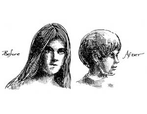

Two years ago I walked out of a barber shop, ticked off at the whole barbering trade and swearing I'd never pay a professional to cut my hair again.
I was so mad at the butchering I'd just received that I planned a one-man campaign against the haircutting trade: I would learn everything there was to know about cutting hair, get really good at it, cut anybody's hair the way they wanted it cut and do it for free.
I was hoping that other people would pick up on the idea and, together, we'd put the barbering and hairstyling people out of business. It was a mini-gesture of dissent against the technocratic society that insists we have to go to an expert for everything we need rather than learn to do whatever needs to be done ourselves.
My roommate at that time was holding down a straight gig and had to keep his hair beaten back to a reasonable level, so I began to learn on him. My first efforts were major disasters, so I went to the library to see what there was on haircutting.
Most of the barbering books I found were written in 1843, but I did pick up some information: How to hold the scissors, how to aim them, what a blunt, shingle and layered cut was. Modern treatises were available for women's hair styles, but most of these were more concerned with how to use human hair as a raw material like plastic (endless information on setting, teasing, lacquering, gluing, etc.) than with giving simple advice on cutting.
So I learned by doing. (See step-by-step instructions here.)
I've now hacked away at men, women and children and I'm just getting into the tao of hair. This article is an attempt to lay some of the things I've learned on anyone who's interested.
Hair grows out of little holes in your head: The only place it's alive is at the root, in those little holes. The stuff that waves in the breeze is made up of dead cells and anything you do to it will have no effect on the live part down below.
Cutting your hair will not make it grow faster. If you have really long hair and want to cut out the split ends, go ahead. Keep in mind that you're only improving the appearance, not the "health" of the hair.
Most shampoos on the market, like so much else pushed at us in the consumer society, are junk. The weavers of Northern India have hair that is never cut their entire lives. They keep their heads clean by massaging sawdust into the scalp and brushing it out. (I've never tried this. If you do, let me know how it works.)
A mild castile soap will do anything that the most expensive shampoo will do. My personal preference is for tar soap, a mildly medicated product (dating back to my grandmother's time) which leaves you smelling faintly of pine forests. Books like Joseph E. Meyer's The Herbalist list many natural plants which may be used as shampoo. If you're into a rural trip, experiment with some of them.
If your hair is very long and very fine you will have hassles with tangles after you wash it. These hassles will increase the longer it gets. Unless you enjoy ripping out your hair in clumps every time you comb (if you still comb it), you might want to try a cream rinse.
All cream rinses-expensive commercial ones or cheap ones you make yourself-do one useful thing and one thing only: They coat the hair with something which keeps the tangles down. Stale beer poured through your hair and rinsed out might work as well for you as the costliest bottle of glop on the shelf. Again, natural plants might be used.
If you really must set your hair, remember that the only difference between the twenty-nine-cent bottle of wave set and the three-buck jar from somebody's "house" is largely in the perfumes. And stale beer works fine, too.
A few words on diseases of the scalp:
White flakes of dandruff are more or less natural; wash your hair more often. Dandruff that is reddish, often accompanied by itchy scalp, indicates that your head has something growing there besides hair. See a doctor.
If you're a woman and your hair is falling out, see a doctor: Something is wrong.
If you're a man and your hair is falling out, take a look in the mirror. If it's going at either side of your forehead and/ or the top of your head in the back, chances are you've got male pattern baldness about which you can do the following: (1) Get a wig; (2) Get hair transplants at the cost of several thousand dollars; (3) Take female hormones which, besides causing your hair to come in vigorously again, will aid you if you intend to enter the transvestites' Miss America contest; or (4) Realize that you're a male who's getting older and get behind and groove on the natural phenomena. If your hair is going in irregular patterns, there's something wrong: See a doctor.
Now to cutting:
In a sense the simplest, most natural and easiest thing to do about your hair is, nothing. Wash it when you take a shower, massage your scalp with your finger tips (not nails!) to increase the blood circulation down where the hair is still alive and, beyond that, let it alone. If this is your bag (for a year and a half it's been mine), you can stop reading. Go in peace. Stay out of Mississippi.
If, however, you'd like to get into cutting your own or your friends' hair (unless you've got hair which grows naturally into an afro, you will find cutting your own maddeningly difficult), you will need two pairs of scissors: One that looks like "A" for blunt cutting and one that looks like "B" for thinning. If you pay more than six bucks for either pair, you've been taken. Four is a good price at a discount house that specializes in hair products.
You will also need a comb. Any comb that is long. That's all. The "trimcomb" that was given a paragraph in the most recent Whole Earth Catalogue is no general solution to haircutting problems. If you don't know what you're doing, you can take off huge clumps of hair with it before you get it under control. It's useful for blending a finished haircut, but for little else.
The most important thing about cutting hair is understanding its tao. When you build on land, you can go in with bulldozers, push down the hills, tear up the trees and throw up anything you want: Skyscraper, parking lot, mausoleum. Or you can look at the land, live on it, walk over it, then gradually come to understand its tao and build your building to be part of what's already there.
Similarly, by thinking of hair as something akin to dynel or nylon, starting with a preconceived notion of what it should look like, you can-by cutting, setting, spraying, etc.-get hair to do anything you can dream up. I'm not down on that kind of trip as theatrics but as a way of life I find it a bit obnoxious. What interests me in all of this is the understanding that comes when you look at hair, feel it, comb it, watch it move, then gradually begin to cut, with respect.
The first thing you learn is that hair is not a static sculpture. It's more like, to continue the art analogy, a mobile. Hair is meant to move. It's got to be cut that way. The best way to begin thinking your way into the hair is to cut it moving. Don't just stick your scissors in, line them up like daddy on the golf course getting ready for a putt and SNIP. Instead, start the hair moving, across the line it needs thinning.
You do this by combing up under it with the comb in your left hand. As the hair fans, you move the scissors (in your right hand) into it, cutting lightly as you go. This technique is terribly hard to describe on paper, relatively easy to pick up from watching.
Another useful thing to do is have your friend (or victim, depending on how experienced you are) shake his head frequently during the hair cut. You can then see how the hair falls, naturally, when left to itself.
The curlier hair is, the easier it is to cut. With intensely thick and curly hair, it's impossible to make a mistake:Your errors get lost immediately in the curls. Fine, straight hair is the most difficult to cut. The slightest hesitation of movement on your part will cause a blur in the line that will show forever.
Hair wet, or very dirty or oily, does not look like hair clean. If you can get straight, thin hair to blend wet, it will look outasight clean and dry, as the additional "fluff" covers mistakes. For the same reason, always cut wet hair somewhat longer than you want it. The fluff will add body, but decrease length.
Before I sign off here, I've got a few more comments I hope are of some interest.
The current teenage boy hair style of eyebrow-length bangs swept to one side strikes me as about the most ridiculous thing to come down the pike since the Mohican. Not only is this style attempted by every male adolescent in the Boston area, whether or not his particular head of hair grows that way, but it is giving rise to an entire generation with a peculiar twitch of the head which comes from tossing their hair out of their eyes nine million times a day.
If you haven't inherited your father's masculinity hangups, you can help keep the bangs out of your eyes by combing stale beer or waveset through them, Scotch-taping them in place, letting them dry and combing them out. Of course. If you didn't wear this non-functional hair cut, you wouldn't have to worry about hair in your eyes in the first place.
If you're a male who's fleeing the narks, attempting to cross the border to or from Canada or applying for a straight gig, you can disguise fairly long hair. (Not shoulder-length, but shorter fuzz tops disguise pretty easily.)
The Man, in whatever guise, worries about two things: Do your ears show? Is the back of your neck clean?
Dump something into your hair to hold it (try stale beer, the greasy kid stuff or wave set), comb it into a reasonable facsimile of the standard Establishment male style, part and all. Sweep the hair back to let your ears show. Put enough gunk in it to make sure it holds. Then take a razor and shave the back of your neck and around your ears. Add a suit and tie, and you've got it made. When you get back into a sympathetic environment, wash your hair, give your head a couple of shakes, and you're a human being again.
One of the things I learned when I got into this trip is that hair doesn't come labeled "male" and "female". It's just hair. I've cut long, feathered bangs on boys and short, no-nonsense styles on girls (and vice versa). In every case, if I was doing what the individual wanted-respecting the tao of their hair and their persons-my haircuts were, for all the technical imperfections, better statements of who they were than the most proficient barbering job of some bored scissors-wielder who learned one way that hair should be cut, period.
I'm glad to do my little bit to break down all these old sick sex role distinctions: To help people see each other as human beings instead of as dead stereotypes (aggressive, short-haired, sadistic MAN vs. compliant, longhaired, masochistic WOMAN). And I'm glad to do that little bit to get rid of the specialists in the barber shops and beauty salons.
It may seem like a small thing, but we don't need some expert to tell us how to wear our hair any more than we need one to tell us how to live.
|
 |
|
|